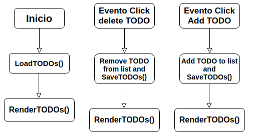

Debes completar la implementación de las funciones cargarTareas(), pintarTareas() y guardarTareas() localizadas en sus respectivos archivos cargarTareas.js, pintarTareas.js y guardarTareas.js. Muestro a continuación el diagrama de funcionamiento: 
Para que los tests funcionen debes usar objetos como los siguientes para representar una tarea:
{
text: 'Hacer cosas',
done: false
}
Cada todo debe tener un html similar al siguiente:
<input type="checkbox" id="cbox2"> <label for="cbox2">Hacer cosas</label><button>Borrar</button>
A continuación el HTML para implementar la aplicacion